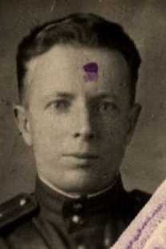

Бычков Иван Павлович
Дата рождения1912
Место рожденияКрасноярский край, Балахтинский р-н
Дата призыва1941
Место призываБалахтинский РВК, Красноярский край, Балахтинский р-н
Место службы923 сп 251 сд
Воинское званиекапитан
НаградыМедаль «За боевые заслуги»; Медаль «За оборону Москвы»; Медаль «За победу над Германией в Великой Отечественной войне 1941–1945 гг.»
ИсторияКапитан, 1912, Красноярский край, Балахтинский р-н, Место службы: 923 сп 251 сд. Именные списки частей
ID 8845523, источник: ЦАМО, фонд: 1535, опись: 2, дело: 20
Ст. лейтенант, 1914, Красноярский край, Балахтинский р-н, Место службы: Балахтинский РВК, Красноярский край, Балахтинский р-н, 1 осб 153 сбр. Именные списки частей
ID 5544362, источник: ЦАМО, фонд: 1982, опись: 2, дело: 1
Капитан, 1912, Красноярский край, Балахтинский р-н, д. Тсалук
ID 80035296
Капитан, 17.09.1912, Красноярский край, Балахтинский р-н, д. Топлук, Место службы: 1285 сп 60 сд 16 Уд. А ЗапФ
ID 93860451
Ст. лейтенант, 1912, Красноярский край, Балахтинский р-н, Курбатовский с/з, Место службы: 48 лбр 20 А (II) ЗапФ. Именные списки частей
ID 12230040, источник: ЦАМО, фонд: 2118, опись: 2, дело: 4
ID 8845523, источник: ЦАМО, фонд: 1535, опись: 2, дело: 20
Ст. лейтенант, 1914, Красноярский край, Балахтинский р-н, Место службы: Балахтинский РВК, Красноярский край, Балахтинский р-н, 1 осб 153 сбр. Именные списки частей
ID 5544362, источник: ЦАМО, фонд: 1982, опись: 2, дело: 1
Капитан, 1912, Красноярский край, Балахтинский р-н, д. Тсалук
ID 80035296
Капитан, 17.09.1912, Красноярский край, Балахтинский р-н, д. Топлук, Место службы: 1285 сп 60 сд 16 Уд. А ЗапФ
ID 93860451
Ст. лейтенант, 1912, Красноярский край, Балахтинский р-н, Курбатовский с/з, Место службы: 48 лбр 20 А (II) ЗапФ. Именные списки частей
ID 12230040, источник: ЦАМО, фонд: 2118, опись: 2, дело: 4